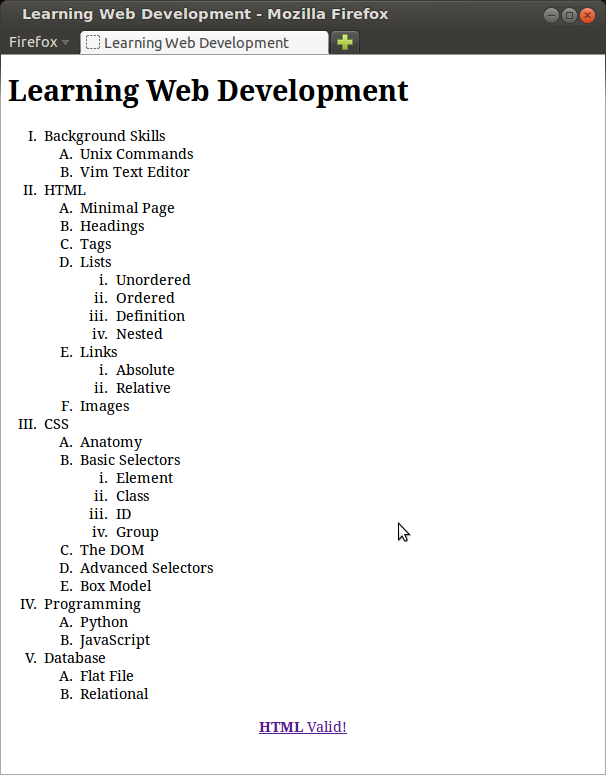

li.ul.<ul> tag.<li></li> tags.</ul> tag.Here is how the list parts should look together in a list of fruits:
<ul> <li>apples</li> <li>bananas</li> <li>cherries</li> <li>grapes</li> </ul>
Note:
white space
more than a single character is ignored by browsers when rendering HTML source
(except in <pre></pre> elements), but formating
is important to people who create and maintain HTML documents. So keep
your HTML source clean with indentation and white space to make it easy to
read.
<ol>
<li>.</ol>Ordered lists come in five types, which enumerate the list with:
<ol type=1
>: decimal numbers (1, 2, 3, ...),
the default type.<ol type=a
>: lower case letters
(a, b, c, ...).<ol type=A
>: upper case letters (A, B, C, ...).
<ol type=i
>: lower case roman numbers
(i, ii, iii, iv, ...).<ol type=I
>: upper case roman numbers
(I, II, III, IV, ...).
Add the appropiate type attribute to the inside the open
ol tag to get the enumeration type you want.
As you might suspect, this is used for lists of words and their definitions.
The source code looks like this:
<dl> <dt>HTML</dt><dd>Hyper-text Markup Language</dd> <dt>WWW</dt><dd>World Wide Web</dd> <dt>W3C</dt><dd>World Wide Web Consortium</dd> <dt>dl</dt><dd>definition list</dd> <dt>dt</dt><dd>definition term</dd> <dt>dd</dt><dd>definition description</dd> </dl>
Lists can be nested within other lists, to any level you desire. Here is an unordered list nested within an ordered list which is itself nested inside another ordered list:
The html source code for this looks like this:
<ol type="1">
<li>List 1 part 1
<ol type="i">
<li>List 2 part 1
<ul>
<li>List 3 part 1</li>
<li>List 3 part 2</li>
</ul>
</li>
<li>List 2 part 2</li>
</ol>
</li>
<li>List 1 part 2</li>
</ol>
minimal_page.html to a page called
unordered.html. Set the title and a top level heading to
Unordered List. Create an unordered list with five or more related items of your choosing. Put a second level heading above the list with text decribing what types of items the list contains. A completed exercise might look something like this.
minimal_page.html to a page called
ordered.html. Set the title and a top level heading to
Ordered List. Create an ordered list with five or more related items of your choosing. Put a second level heading above the list with text decribing what types of items the list contains. A completed exercise might look something like this.
minimal_page.html to a page called
definitions.html. Set the title and a top level heading to
Definition List. Create a definition list with definitions for the following HTML terms:
HTML Termsas text. Your completed
definitions.html will look something
like this, except that
it will have completed definitions.minimal_page.html to a page called
learning_webdev.html Set the title and a top level heading to
Learning Web Development, then use nested ordered lists to create a page that looks like this:

{kind=link}
{kind=link}
{kind=link}